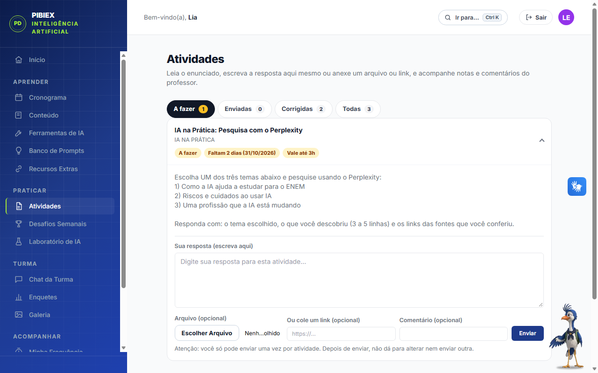
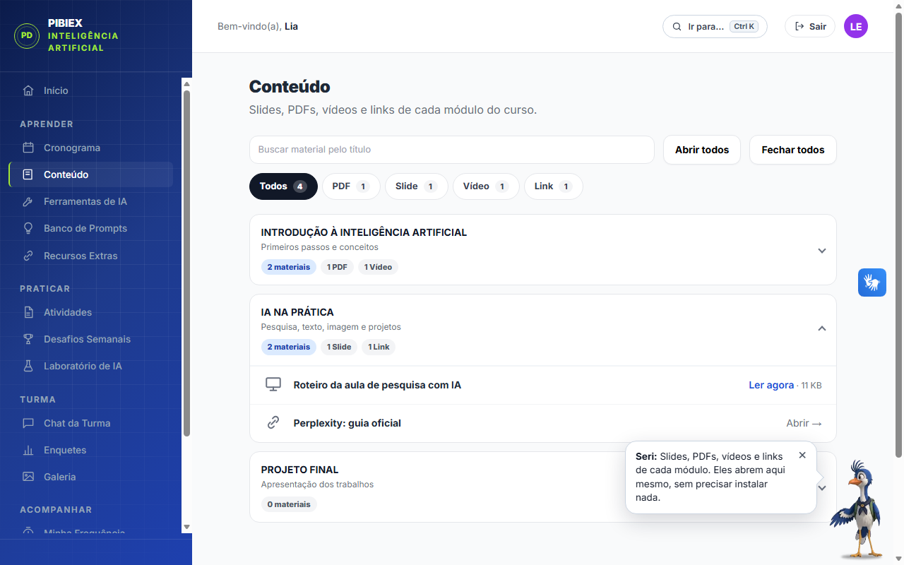
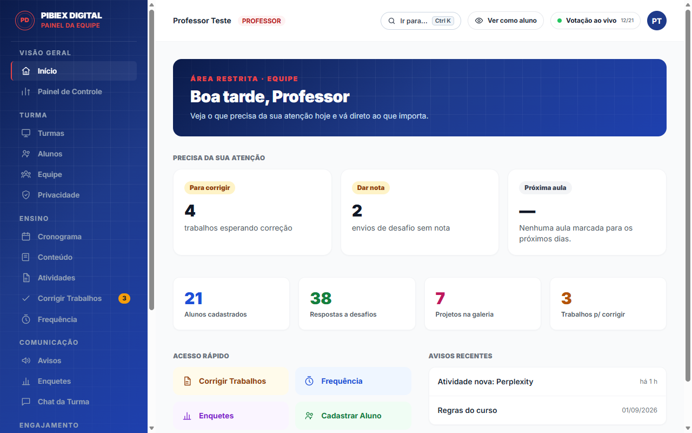

Sobre a plataforma
Um só lugar para ensinar, praticar e acompanhar o curso de Inteligência Artificial.
O PIBIEX Digital reúne em uma plataforma web tudo o que o curso precisa no dia a dia: aulas e materiais, atividades com correção, desafios, frequência, comunicação com a turma e acompanhamento do professor, com acessibilidade e proteção de dados desde o projeto.
Nesta página
Mascote oficial
Conheça o Seri, o guia da plataforma.
O Seri é o mascote oficial do PIBIEX Digital: uma seriema, ave do cerrado do Tocantins. A seriema de verdade anda pelo chão e fica atenta ao que acontece ao redor. É isso que queremos de um guia: alguém que caminha ao lado do aluno. Por isso ela virou o guia do curso.
Você sabia?
Seriema vem do tupi e lembra “crista levantada”, por causa das penas no alto da cabeça.
O canto da seriema é bem alto e pode ser ouvido de longe. Ela sabe se fazer ouvir!
Ela prefere andar e correr pelo chão a voar. Para nós, isso lembra um guia que caminha ao lado de quem aprende.
Come insetos e pequenos animais, inclusive cobras, e por isso é bem-vista por quem vive no campo.
Seriemas de verdade são cinza-amarronzadas. Eu sou especial: nasci azul!
O que o Seri faz por aqui
- Fica no cantinho da tela. Aponte o mouse ou toque nele para ouvir uma dica da página em que você está.
- Na demonstração, explica cada tela.
- Na área do aluno, é o assistente de inteligência artificial: tira dúvidas de estudo e diz onde fica cada coisa na plataforma.
- Se preferir, dá para deixá-lo parado, sem se mexer e sem falar, nas opções de acessibilidade.
Um aviso importante: como assistente, o Seri usa o Gemini, do Google, e pode errar. Confira as respostas e não escreva dados pessoais nas conversas com ele.
Propósito
Levar a Inteligência Artificial para quem está perto dela, mas ainda não a usa.
A plataforma foi criada para apoiar um curso de extensão em Inteligência Artificial voltado a estudantes da terceira série do ensino médio de Ponte Alta do Tocantins, em um projeto do Programa Institucional de Bolsas de Iniciação à Extensão (PIBIEX) da UNITINS.
A ideia é simples: ensinar IA na prática. O aluno aprende a conversar com ferramentas de IA, escrever bons pedidos (prompts), conferir o que a IA responde e usar essa tecnologia para estudar, pesquisar e criar, sem depender de estrutura cara nem de conhecimento prévio.
Para isso o curso precisa de organização: onde ficam os materiais, o que entregar e até quando, como o professor corrige, quem esteve presente. O PIBIEX Digital resolve essa parte, para que o tempo de aula seja usado para aprender.
Prática antes de teoria
Exercícios, desafios e um laboratório para testar IA de verdade, com problemas simples e crescentes.
Acompanhamento próximo
O professor vê quem entregou, quem precisa de ajuda e quem esteve em aula, e responde por ali mesmo.
Acesso para todos
Funciona no celular e no computador, com recursos de acessibilidade, Libras e leitura em voz alta.
A plataforma por dentro
Veja como é usar o PIBIEX Digital.



As capturas usam dados de exemplo; nenhum aluno real aparece. Quer testar você mesmo? Ver a demonstração.
Como funciona
Do primeiro acesso ao certificado, em quatro passos.
-
Acesso
O professor cadastra o aluno na turma. O aluno entra com usuário e senha, troca a senha no primeiro acesso e aceita o Termo de Uso.
-
Aprender
Cronograma, conteúdo por módulo e avisos mostram o que vem a seguir. O material abre direto na plataforma, sem precisar instalar nada.
-
Praticar e entregar
Atividades, desafios semanais e laboratório de IA. As respostas são escritas na hora ou enviadas como arquivo ou link, e o professor corrige com nota e comentário.
-
Acompanhar
Frequência por chamada com código (PIN), horas conquistadas, notas, ranking e níveis. Tudo registrado e consultável, para o aluno e para o professor.
Recursos
O que cada pessoa encontra na plataforma.
As funções são organizadas por finalidade, no menu lateral. Em qualquer página, Ctrl + K abre uma busca rápida para ir direto ao que precisa.
Início
Início
Resumo do que importa agora: avisos da turma (que saem sozinhos quando vencem), atalhos e as próximas aulas.
Aprender
Cronograma
Aulas organizadas por módulo, com data, horário e destaque para a próxima.
Conteúdo
Materiais por módulo (slides, PDFs, vídeos e links) abertos em um leitor da própria plataforma, com busca e filtro por tipo. O download aparece quando o professor libera.
Ferramentas de IA
Um panorama das principais ferramentas, organizadas por categoria, com busca. Inclui o comparador: o aluno faz a mesma pergunta ao Gemini (Google), ao Llama (Meta) e ao gpt-oss (OpenAI) e vê as respostas lado a lado, com limite diário de uso por IA.
Banco de Prompts
Modelos prontos e bem estruturados (papel, objetivo, contexto, formato e regras) para ChatGPT, Gemini, Claude, Perplexity e NotebookLM, com cópia em um clique.
Recursos Extras
Vídeos, e-books, sites, artigos e arquivos recomendados pelo professor, para ler na plataforma ou baixar.
Praticar
Atividades
Enunciado, prazo e horas que a atividade vale. A resposta é escrita direto na página ou enviada com arquivo e link. Depois da correção, o aluno vê nota, horas e comentário do professor.
Desafios Semanais
Desafios com prazo que rendem pontos. Há ranking da semana e geral, e cinco níveis, de Iniciante a Mestre.
Laboratório de IA
Problemas práticos e simples para resolver com ferramentas de IA, com resposta em texto, arquivo ou link.
Turma
Chat da Turma
Conversa com todos, com reações e envio de anexos, moderada pelo professor. Também há conversas privadas com colegas e com a equipe.
Enquetes
Votações da turma, com resultado em tempo real quando o professor libera.
Galeria
Espaço para publicar projetos feitos com IA, curtir e comentar os trabalhos dos colegas.
Acompanhar
Minha Frequência
Quando o professor abre a chamada, um aviso aparece no topo e o aluno registra a presença com o código da aula. O histórico e o total de horas ficam salvos.
Bloco de notas
Anotações pessoais com formatação simples (negrito, cor, tamanho). Só o próprio aluno enxerga.
Ajuda e conta
Perguntas Frequentes
Respostas rápidas para as dúvidas mais comuns sobre o curso e a plataforma. Para dúvidas de estudo, há ainda o assistente de IA, no botão flutuante, com limite diário de uso.
Meu Perfil
Foto, e-mail de recuperação, data de nascimento e troca de senha, além de Meus dados e privacidade: baixar uma cópia dos próprios dados e fazer pedidos de correção ou exclusão ao professor, com resposta na mesma tela.
Busca rápida e saída
Ctrl + K abre uma busca para ir direto a qualquer tela. O botão Sair fica sempre visível no topo e no menu lateral.
Visão geral
Início
Central de atenção: quantos trabalhos esperam correção, quantos desafios estão sem nota, pedidos de privacidade em aberto e a próxima aula. Avisa quando chega um trabalho novo.
Painel de Controle
Indicadores de acesso: quem está online, horários de pico, mapa de calor por dia e hora, ranking de acessos e alunos sem acessar há dias.
Turma
Turmas
Criação e organização das turmas, com a ativa em destaque.
Alunos
Cadastro e edição de alunos, com busca, filtros e a situação de cada um (primeiro acesso, termo aceito, último acesso).
Equipe
Contas de professores e assistentes, com nível de acesso total ou restrito.
Privacidade
Pedidos dos alunos sobre os próprios dados, com prazo de resposta e histórico.
Ensino
Cronograma
Módulos e aulas com data e horário, que aparecem para os alunos.
Conteúdo
Envio de slides, PDFs, imagens e vídeos (até 20 MB cada) ou links, com opção de permitir ou não o download.
Atividades
Criação de atividades com prazo e limite de horas que cada uma vale.
Corrigir Trabalhos
Fila de envios com a resposta do aluno, nota, horas concedidas e comentário. É possível reabrir um trabalho para nova entrega.
Frequência
Abre a chamada com código, duração e quem pode participar, acompanha os registros ao vivo e consulta o histórico. Resume as horas de cada aluno e gera relatório em PDF, base para o certificado.
Comunicação
Avisos
Comunicados com opção de fixar e de definir quando expiram, para a tela do aluno não acumular.
Enquetes
Votações com vários tipos de pergunta (única, múltipla, sim ou não, escala e texto), anônimas ou identificadas, com apuração ao vivo e escolha do gráfico.
Chat da Turma
Acompanhamento e moderação das conversas, e mensagens diretas com os alunos.
Engajamento e apoio
Desafios Semanais
Criação dos desafios, avaliação dos envios com pontos e comentário, e acompanhamento do ranking.
Galeria
Moderação dos projetos e comentários publicados pelos alunos.
Banco de Prompts, Laboratório de IA, Recursos Extras e Perguntas Frequentes
Cadastro e edição dos conteúdos de apoio que o aluno consulta, sem mexer em código.
Ferramentas do professor
Ver como aluno
Abre a plataforma com os olhos do aluno: em modo demonstração, para testar à vontade sem salvar nada, ou em modo observação, para ver a tela de um aluno sem escrever em nome dele.
Busca rápida
Ctrl + K em qualquer página leva direto ao que o professor procura.
Backup
Cópia completa dos dados da turma, disponível apenas para a equipe com acesso total.
Acessibilidade
Feita para ser lida e usada por todos.
O botão de acessibilidade está em todas as páginas, inclusive antes do login. As escolhas valem só no aparelho de quem as faz.
- Libras (VLibras): tradutor do governo federal, que já vem ativo e pode ser desligado.
- Ouvir a página: uma voz lê o conteúdo, com pausa, velocidade e opção de ler só o que o aluno apontar.
- Alto contraste e tamanho do texto em três níveis, além de reduzir animações.
- Leitura facilitada: links destacados, espaço entre letras, altura da linha, alinhamento à esquerda, fonte de leitura fácil (Atkinson Hyperlegible), cursor grande, cores suaves ou em tons de cinza e opção de ocultar imagens.
- Teclado: todas as funções podem ser usadas sem mouse, e o Ctrl + K leva a qualquer página.
- Qualidade verificada: as páginas passam por verificação automática de acessibilidade (rótulos, contraste, estrutura) a cada ajuste.
Privacidade e segurança
Os dados dos alunos são tratados com cuidado.
Boa parte dos alunos é menor de idade, e isso orienta as decisões da plataforma. O detalhamento completo está na Política de Privacidade, e os serviços usados e o monitoramento estão na página de Transparência.
Só o necessário
Coletamos apenas o que o curso exige. Não há anúncios, venda de dados nem perfis comerciais.
Cada um vê o que é seu
O acesso é controlado no servidor: o aluno só enxerga o que pertence a ele e à própria turma, e a equipe tem níveis de permissão.
Arquivos protegidos
Trabalhos, materiais e anexos ficam em armazenamento privado e só abrem com link temporário, para quem tem permissão.
Seus direitos na prática
Pelo Perfil, o aluno baixa uma cópia dos seus dados e pede correção ou exclusão, com prazo de resposta de até 15 dias.
Limpeza automática
Registros técnicos antigos, como sessões vencidas e tentativas de login, são apagados sozinhos depois de um prazo definido.
Verificação contínua
Testes automáticos e uma auditoria de segurança conferem as permissões e o funcionamento a cada mudança, e o site é monitorado de hora em hora.
Por dentro
Tecnologia simples, escolhida para durar.
O site é estático e leve, o que o torna rápido mesmo em conexões fracas. Os dados ficam em um banco de dados PostgreSQL com regras de acesso por linha, e a lógica sensível roda em funções de servidor que conferem a sessão de cada pedido. As fontes e os scripts principais são servidos pela própria plataforma, sem rastreadores de terceiros.
Quem faz
Por trás da plataforma
Marciel Gomes Lima Rodrigues
Desenvolvedor da plataforma · Bolsista de TADS
Aluno do curso de Tecnologia em Análise e Desenvolvimento de Sistemas (TADS) da UNITINS e bolsista responsável por colocar o projeto em prática em Ponte Alta do Tocantins. A plataforma é de autoria e responsabilidade dele e não é um site oficial da UNITINS.
Pronto para começar?
Acesse com o usuário e a senha fornecidos pelo curso.